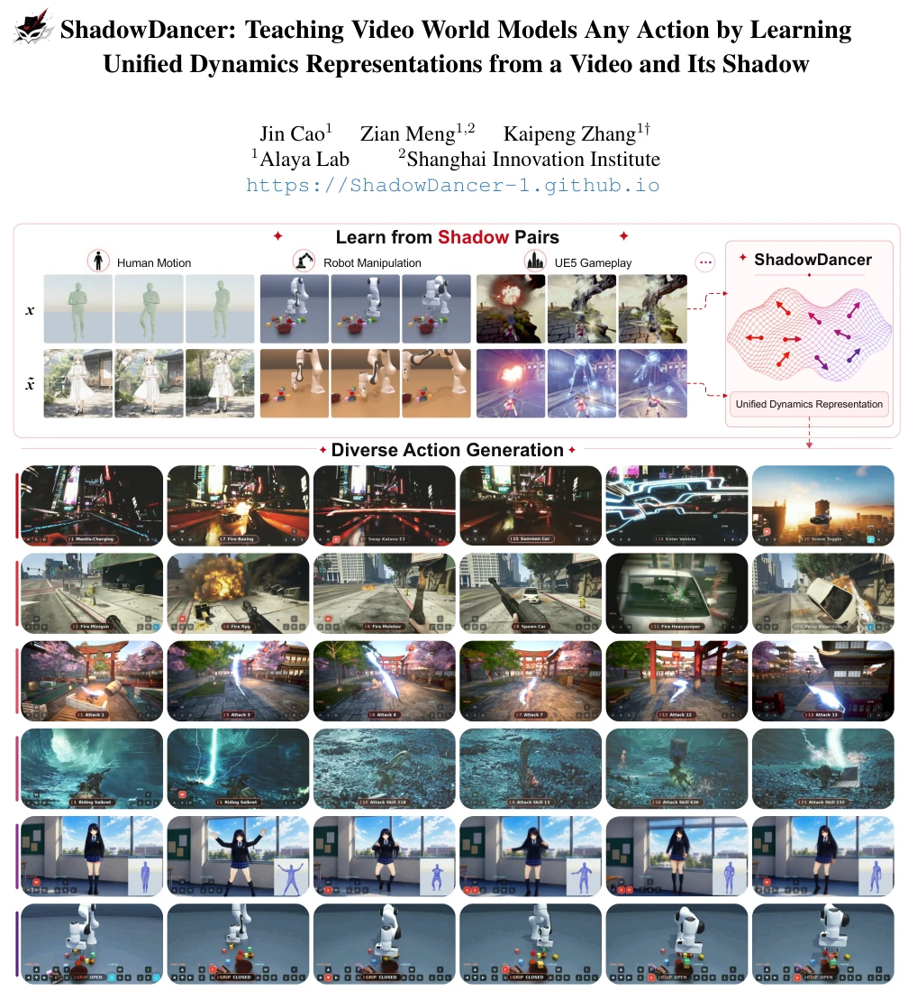
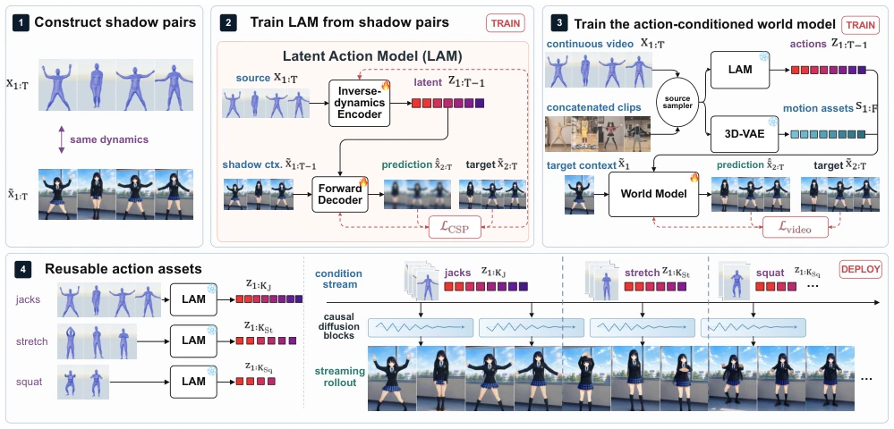
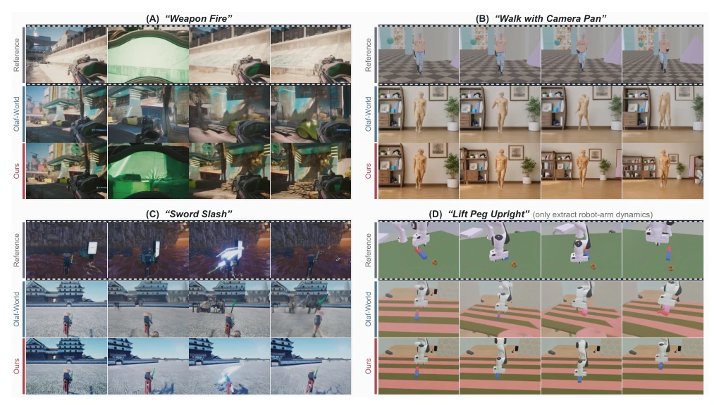
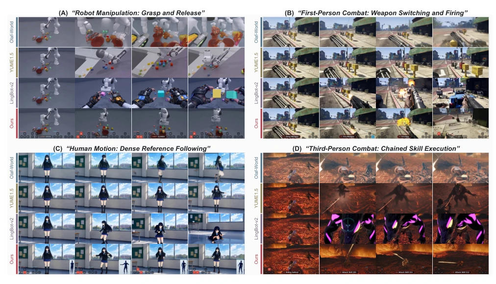
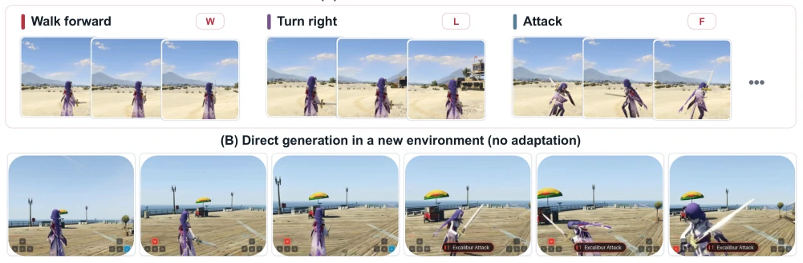

ShadowDancer 这名字起得挺有诗意，本质是用“影子对”强行解耦动作与外观。作者很聪明，发现现有 Latent Action Model 如 Olaf-World [32] 容易把动作和背景混在一起，导致迁移时出现鬼影。他们搞了个 Shadow Library，在渲染器里重玩动作但换皮肤，逼着模型只学“动”不学“样”。这招在仿真数据上效果拔群，PSNR 和 LPIPS 都吊打基线。但毒舌一下：这玩意儿高度依赖渲染引擎生成的完美影子对，真机视频只能当自配对凑数，泛化到真实世界的“影子”怎么造？还有，把扩散模型转成因果块虽然能长程生成，但推理延迟和显存开销估计不小。总的来说，是具身 AI 控制接口的一次漂亮实验，但离“通用”还差个真实世界的影子。
The name ShadowDancer is quite poetic; essentially, it forcibly decouples action and appearance using 'shadow pairs'. The authors are clever, discovering that existing Latent Action Models like Olaf-World [32] tend to mix actions and backgrounds together, leading to ghosting artifacts during transfer. They created a Shadow Library, replaying actions in the renderer but changing skins, forcing the model to learn only 'motion' not 'style'. This approach performs exceptionally well on simulation data, with PSNR and LPIPS significantly outperforming the baselines. However, critically speaking: this method relies heavily on perfect shadow pairs generated by the rendering engine; real-world videos can only serve as self-paired fillers, so how to create 'shadows' generalizing to the real world? Also, converting diffusion models into causal blocks allows long-term generation, but inference latency and memory overhead are estimated to be significant. Overall, it is an excellent experiment on embodied AI control interfaces, but still lacks a real-world shadow to achieve 'generalization'.
Interactive video World Models currently face the mutually exclusive dilemma of 'control accuracy' and 'generalizability'. Existing interfaces are either vague like text prompts [41] or rigid like symbolic commands [14]. More mainstream Latent Action Models (LAMs) attempt to extract actions from videos, but face the non-identifiability problem: models, to minimize reconstruction error, often entangle actions with specific appearances (e.g., character skin, lighting) [32, 40]. This means in models like Olaf-World [32], the learned z cannot cleanly separate dynamics and appearance, leading to deformations or artifacts when actions transfer to new scenes. Additionally, structured inputs (e.g., 3D motion capture) are precise but difficult to obtain and bind to specific families [8, 16]. Therefore, the core pain point lies in how to extract appearance-independent, reusable dynamic representations from demonstration videos without relying on labels and specific estimators.

Figure 1. ShadowDancer learns any action from a video and its shadow. Top: shadow pairs (x, ˜x) replay one dynamics under independently resampled appearance, across heterogeneous sources such as human motion, robot manipulation, and open-world gameplay, and distill it into a unified dynamics representation z1:T −1. Bottom: the same latent interface drives diverse commanded actions, spanning first- and third-person combat, driving, locomotion, and robot manipulation.
方法Method
整体 Pipeline 分为三步：影子对构建、跨影子预测训练、世界模型微调。1. Shadow 构建：核心是协议而非引擎。通过 Shadow Library 在动画套件、游戏引擎或机器人模拟器中，对同一动力学轨迹 d 进行多次渲染，独立重采样外观 c（如角色、场景、光照），生成影子对 (x, x̃)。这确保了 d 是唯一共享因子。2. Cross-Shadow Prediction：训练 LAM 时，Encoder 从源视频 x 提取潜在动作 z，Decoder 利用 z 和目标上下文 x̃t 预测下一帧 x̃t+1。由于目标外观已给定，模型被迫将 z 压缩为仅包含共享动力学的最小表示，KL 正则项进一步约束。3. World Model：基于 SkyReels-V2 [9] 的 DiT 骨干，微调为 Block-Causal 生成器。条件输入包括 z（统一动力学）和源视频 s（通过 3D-VAE 编码的细节资产）。这种设计允许 z 负责控制逻辑，s 负责高频细节，实现了长程因果生成。部署时，动作作为可变长度资产存储，无需微调即可复用。此外，协议允许选择保留相机轨迹或场景运动，实现因子选择性控制。
The overall Pipeline is divided into three steps: Shadow pair construction, Cross-Shadow prediction training, World Model fine-tuning. 1. Shadow Construction: The core is the protocol, not the engine. Through Shadow Library in animation suites, game engines, or robot simulators, render the same dynamic trajectory d multiple times, independently resample appearance c (e.g., character, scene, lighting), generating shadow pairs (x, x̃). This ensures d is the only shared factor. 2. Cross-Shadow Prediction: When training LAM, Encoder extracts latent action z from source video x, Decoder uses z and target context x̃t to predict next frame x̃t+1. Since target appearance is given, the model is forced to compress z into a minimal representation containing only shared dynamics, KL regularization term further constrains. 3. World Model: Based on SkyReels-V2 [9] DiT backbone, fine-tuned as Block-Causal generator. Condition inputs include z (unified dynamics) and source video s (detail assets encoded via 3D-VAE). This design allows z to handle control logic, s to handle high-frequency details, achieving long-term causal generation. During deployment, actions are stored as variable-length assets, reusable without fine-tuning. Additionally, the protocol allows selecting to retain camera trajectory or scene motion, achieving factor-selective control.

Figure 2. Overview of ShadowDancer, taking human motion as the running example; the pipeline is identical for camera, object, and every other dynamics family. (1) A shadow pair renders one dynamics d twice, x=R(d, c) and ˜x=R(d, ˜c), with the remaining factors independently resampled. (2) Cross-shadow prediction trains the LAM: the encoder reads each zt from the source transition, and the decoder predicts the next shadow frame from (˜xt, zt), so only what the pair shares survives in z. (3) With the LAM and 3D-VAE frozen, a video diffusion backbone is fine-tuned into a block-causal world model, conditioned on the action trajectory z and on source motion assets s, and trained on mixed continuous and concatenated sources. (4) At deployment, variable-length action assets (z, s) are stored, com
Experiments cover human motion, robot manipulation, first/third-person games, and camera control. Datasets come from Shadow Library (SMPL-X, ManiSkill, GTA, etc.) and real video self-pairing. Baselines include Olaf-World [32], Yume-1.5 [41], and LingBot-World 2.0 [19]. 1. Action Transfer: On PSNR/LPIPS/ATE metrics, ShadowDancer leads Olaf-World comprehensively, e.g., human motion PSNR improved from 18.2 to 22.4, proving dynamic decoupling effective. 2. Long-term Generation: Through 2AFC blind test, ShadowDancer wins 86%+ in action control, fidelity, and long-term consistency, baselines often show drift or hallucinations. 3. Ablation & Generalization: Ablation shows 'shadow pairing' is core, performance drops sharply after removal. Unseen action test (Fig 5) shows model can generalize to new actions introduced via Mod after training, requiring only one encoding to be added to library. Camera control evaluated via ATE/RPE, error dropped from 0.072 to 0.005, accuracy improvement significant.

Figure 3. Qualitative action transfer against Olaf-World. Top: reference videos providing the action across four families; below: frame-synchronized generations in the new environment. Olaf-World warps subjects and leaks spurious motion; ShadowDancer re-enacts the reference dynamics faithfully.

Figure 4. Qualitative long action rollouts. Each comparison starts from a shared first frame and follows the same command stream; rows are methods, columns are time steps along the rollout. Where the baselines drift or degrade, ShadowDancer stays aligned.

Figure 5. Transferring unseen actions: assets recorded from a modded, unseen character (A) drive generation in a new environment (B).